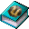
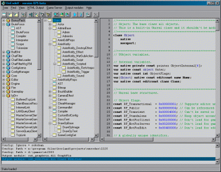
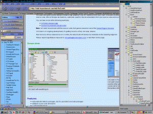

UnCodeX

|
UnCodeX is a combination of UClasses and UnDox created by El Muerte. UnCodeX can create a class and package tree from the UnrealScript sources, analyse the content of each class for later use. UnCodeX also gives you the ability to create a high detailed HTML API reference from your code. It includes all definitions made in classes, syntax highlighted source code, links to the type declarations, automatic JavaDoc-like documentation from your source code and much more. You can take a look at the following examples:
Note: UnCodeX should work with the source code of all games based on any of the Unreal Engine Versions. Currently supported UnrealEngine games:
If UnCodeX doesn't work with the unrealscript of a different game, please email me the unrealscript source of the game so I can fix the parser. And add it to the supported list. Please report bugs/feature requests: on [the SourceForge project page] |
Screen shots
|  | UnCodeX with everything on |
|  | UnCodeX in Tool window mode. In Tool window mode UnCodeX reserves a part of the desktop that can't be used by other application (like the taskbar). UnCodeX can be set to 'Auto Hide' when it's not focused, just like the taskbar with 'Auto Hide' enabled. |
Features
- Automatically detects packages, but it is possible to exclude packages
- Multiple source code directories
- Customizable layout
- Customizable hot keys
- Application Toolbar support (can snap to the left and right side of the screen)
- Compile classes using your favorite compiler front-end
- Launch a test server from UnCodeX
- Join your test server
- Batch execution via commandline
- Import package priority settings from game .ini files
- possible to tag package to distinguish original packages/classes from custom packages/classes
- Commandline version for documentation generation (MS Windows and GNU\Linux i386 builds)
- Extendable via RemObjects' PascalScript
- Class tree and Package viewer
- Class inheritance tree
- Package tree
- Inline search
- Find a classes in the tree (using part of the name)
- Class full-text search (with regular expression support)
- Syntax hilighted source code preview of a selected class
- Package property editor
- Create subclass dialog
- Recursive delete classes
- Move classes to a different package
- property inspector to list add variables/functions/etc. in a class
- Defaultproperties browser
- Documention generator
- Create HTML reference [Example page]
- Compile HTML reference to a MS HTML Help file (requires [HTML Help Workshop])
- Customizable HTML output using templates (UnrealWiki like template included)
- Support for special source code comments:
/** comment about the class/var/etc. below */ - All leading class comments are accepted as comments for that class.
- support for custom output modules
- Support for custom comment preprocessors (HTML output)
- Additional output modules
- ClassWikifier to be used on the UnrealWiki
- [GraphViz] output ([sample 1], [sample 2])
- [CTAGS] file creator
Downloads
Older downloads
Development releases
[MS Windows Beta] (latest build: 234)
[ucxcu Linux x86] (latest build: 014 beta 229)
Changes
- Fixed loading of interface tree
- UE3 parsing fixes
- Fixed "-find" and find first searches
- Fixed saving of external modules configuration settings
CVS
The source code is available from my CVS server, the module name is UnCodeX
- WebCVS access
- http://cvs.sourceforge.net/viewcvs.py/uncodex/UnCodeX/
- Anonymous CVS (info)
- https://sourceforge.net/cvs/?group_id=120421
Discussion
Please use the [SourceForge project page] for bug reports/feature requests/etc.
Use the seperate /discussion page for UnrealWiki related parts aspects of this tool/project.